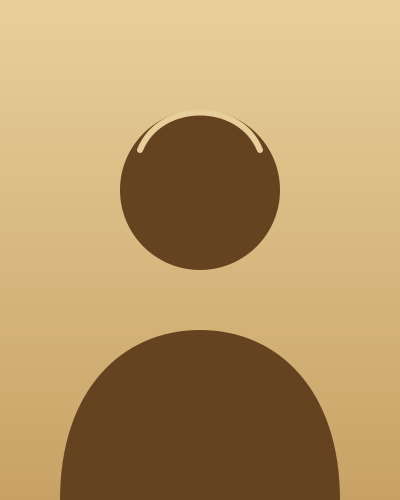

Sobre mim
A jornada até aqui

Olá, aqui é Flaraoh.
Game designer em transição de carreira, com paixão por sistemas que parecem simples e escondem camadas.
O apelido nasceu em uma partida online, metade piada, metade profecia: alguém precisava governar aquele caos. Ficou. Hoje ele resume o que busco no design: estrutura sólida como uma pirâmide e mistério suficiente para que o jogador queira entrar.
Venho do mundo comercial, onde aprendi a escutar, negociar e transformar objeções em oportunidades. Levo isso para cada protótipo: jogador é cliente, e feedback é ouro.
Minha trajetória
-
Graduação
A base: pensar de forma estruturada
Na faculdade aprendi método: pesquisa, análise e comunicação clara. Ferramentas que hoje uso para escrever documentos de design e defender decisões com dados.
-
Experiência comercial
Anos de negociação e pessoas
Atuei em vendas e relacionamento com clientes. Lidei com metas, funis e muita gente diferente, e percebi que motivação, recompensa e progressão funcionam igual em um CRM e em um RPG.
-
Transição
Do hobby à profissão
Comecei com cursos de game design, game jams e muitos protótipos de papel. Cada jam virou um laboratório para testar mecânicas, escopo e trabalho em equipe.
-
Hoje
Construindo portfólio e buscando o primeiro estúdio
Foco em design de sistemas, puzzles e level design. Procuro um time onde eu possa aprender rápido e contribuir com a visão de quem conhece o lado do negócio.
O que trago na bagagem
Design
Ferramentas
Do mundo comercial
Contato rápido
- E-mail: contato@flaraoh.dev
- Localização: Brasil · aberto a remoto e híbrido
- Disponibilidade: vagas júnior, estágios e freelas de design